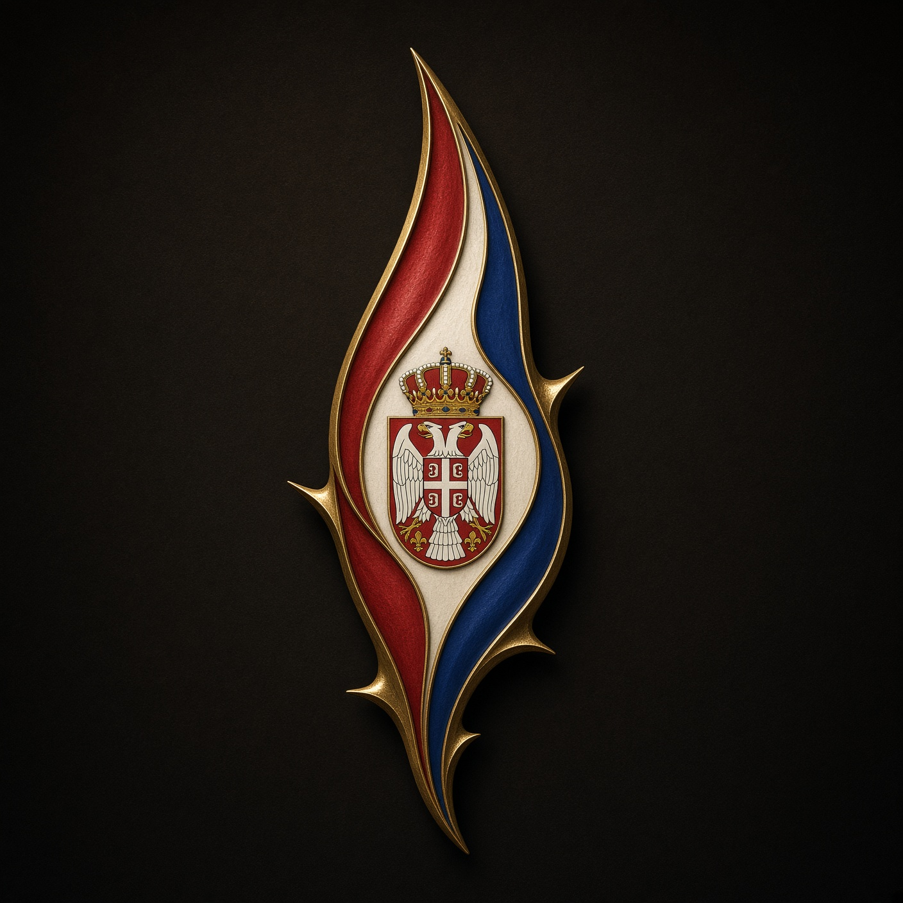

<!DOCTYPE html>
<html lang="sr">
<head>
<meta charset="utf-8">
<meta name="viewport" content="width=device-width, initial-scale=1">
<title>Трн у оку</title>
<link rel="icon" href="logo.jpg">
<link rel="stylesheet" href="https://fonts.googleapis.com/css2?family=Literata:ital,opsz,wght@0,7..72,500;0,7..72,650;1,7..72,400&family=Source+Sans+3:wght@400;500;600&display=swap">
<style>
:root { --bg:#0c0a09; --fg:#f2ece3; --muted:#9c907f; --red:#b42318; --blue:#1e3a5f; --gold:#c4a574; --line:#2a241e; }
* { box-sizing: border-box; }
html, body { margin: 0; background: var(--bg); color: var(--fg); font-family: "Source Sans 3", system-ui, sans-serif; }
button { font: inherit; color: inherit; background: none; border: 0; cursor: pointer; }
.tri { height: 4px; background: linear-gradient(90deg, var(--red) 0 33%, var(--blue) 33% 66%, #f2ece3 66%); }
.hero { min-height: 100vh; display: flex; flex-direction: column; align-items: center; justify-content: center; padding: 3rem 1.4rem; text-align: center; }
.logo { width: min(14rem, 60vw); height: auto; border-radius: 50%; }
.kicker { font-size: .7rem; letter-spacing: .28em; text-transform: uppercase; color: var(--gold); margin: 1.4rem 0 .4rem; }
h1 { font-family: Literata, Georgia, serif; font-weight: 500; font-size: clamp(2.4rem, 6vw, 3.4rem); margin: 0; }
.msg { font-family: Literata, Georgia, serif; font-size: clamp(1.4rem, 3.5vw, 1.9rem); line-height: 1.45; max-width: 28rem; margin: 2rem auto; }
.langs { display: grid; grid-template-columns: 1fr 1fr; gap: .6rem; width: min(24rem, 90vw); margin-top: 1.5rem; }
.langs button { border: 1px solid var(--line); padding: 1rem; font-family: Literata, Georgia, serif; font-size: 1.05rem; }
.langs button:hover { border-color: var(--gold); }
.enter { margin-top: 1rem; letter-spacing: .18em; text-transform: uppercase; font-size: .75rem; border-bottom: 1px solid var(--red); padding-bottom: .3rem; }
.page { max-width: 52rem; margin: 0 auto; padding: 1.5rem 1.4rem 4rem; }
.head { display: flex; justify-content: space-between; align-items: center; margin-bottom: 2rem; }
.back, .script { font-size: .8rem; letter-spacing: .06em; color: var(--muted); }
.script { color: var(--gold); }
.cards { display: grid; gap: 1rem; }
.card { display: block; width: 100%; text-align: left; border: 1px solid var(--line); padding: 1.2rem 1.2rem 1rem; }
.card:hover { border-color: var(--gold); }
.card .mark { font-size: .7rem; letter-spacing: .14em; text-transform: uppercase; color: var(--gold); }
.card .name { font-family: Literata, Georgia, serif; font-size: 1.5rem; margin: .3rem 0; }
.card .span { color: var(--muted); font-size: .9rem; }
.banner { width: 100%; height: 16rem; object-fit: cover; margin: 0 0 1.4rem; filter: saturate(.8); }
.gallery { display: grid; grid-template-columns: 1fr 1fr; gap: .5rem; margin: 1.2rem 0; }
.gallery img { width: 100%; height: 12rem; object-fit: cover; }
.cap { font-size: .75rem; color: var(--muted); margin: .3rem 0 0; }
.meta { display: grid; grid-template-columns: 6rem 1fr; gap: .4rem 1rem; margin: 1.4rem 0; font-size: .95rem; }
.meta .k { color: var(--gold); font-size: .7rem; letter-spacing: .12em; text-transform: uppercase; padding-top: .2rem; }
.feast { border-left: 2px solid var(--gold); padding: .2rem 0 .2rem 1rem; margin: 1rem 0; }
.body { line-height: 1.7; font-size: 1.05rem; max-width: 38rem; }
</style>
</head>
<body>
<div class="tri"></div>
<div id="app"></div>
<script>
const LANGS = [
  { id:"sr", name:"Српски" }, { id:"ru", name:"Русский" }, { id:"zh", name:"中文" },
  { id:"en", name:"English" }, { id:"de", name:"Deutsch" }, { id:"fr", name:"Français" },
  { id:"es", name:"Español" }, { id:"it", name:"Italiano" }
];
const WELCOME = {
  sr:"Добродошли у Трн у оку. Историју и злочине које неко жели да заборавите.",
  ru:"Добро пожаловать в «Трн у оку». История и преступления, которые кто-то хочет, чтобы вы забыли.",
  zh:"欢迎来到「眼中的刺」。这是有人希望你忘记的历史与罪行。",
  en:"Welcome to Thorn in the Eye. The history and the crimes someone wants you to forget.",
  de:"Willkommen bei Dorn im Auge. Die Geschichte und die Verbrechen, die jemand vergessen machen will.",
  fr:"Bienvenue dans L'Épine dans l'œil. L'histoire et les crimes que l'on veut vous faire oublier.",
  es:"Bienvenidos a Espina en el ojo. La historia y los crímenes que alguien quiere que olvidéis.",
  it:"Benvenuti in Spina nell'occhio. La storia e i crimini che qualcuno vuole farvi dimenticare."
};
const UI = {
  enter:{ sr:"Уђи", ru:"Войти", zh:"进入", en:"Enter", de:"Eintreten", fr:"Entrer", es:"Entrar", it:"Entra" },
  back:{ sr:"Назад", ru:"Назад", zh:"返回", en:"Back", de:"Zurück", fr:"Retour", es:"Atrás", it:"Indietro" },
  path:{ sr:"Пут", ru:"Путь", zh:"路径", en:"Path", de:"Weg", fr:"Parcours", es:"Ruta", it:"Percorso" },
  events:{ sr:"Догађаји", ru:"События", zh:"事件", en:"Events", de:"Ereignisse", fr:"Faits", es:"Hechos", it:"Fatti" },
  records:{ sr:"Записи", ru:"Записи", zh:"记录", en:"Records", de:"Einträge", fr:"Fiches", es:"Fichas", it:"Schede" },
  who:{ sr:"Ко", ru:"Кто", zh:"谁", en:"Who", de:"Wer", fr:"Qui", es:"Quién", it:"Chi" },
  when:{ sr:"Када", ru:"Когда", zh:"何时", en:"When", de:"Wann", fr:"Quand", es:"Cuándo", it:"Quando" },
  where:{ sr:"Где", ru:"Где", zh:"何地", en:"Where", de:"Wo", fr:"Où", es:"Dónde", it:"Dove" },
  feast:{ sr:"Празник", ru:"Праздник", zh:"节日", en:"Feast", de:"Festtag", fr:"Fête", es:"Fiesta", it:"Festa" },
  gallery:{ sr:"Слике", ru:"Фото", zh:"图片", en:"Images", de:"Bilder", fr:"Images", es:"Imágenes", it:"Immagini" }
};
const NONE = { sr:"Није црквени празник", ru:"Не церковный праздник", zh:"并非教会节日", en:"Not a church feast", de:"Kein Kirchenfest", fr:"Pas une fête d'église", es:"No es fiesta eclesiástica", it:"Non è una festa religiosa" };
const PHOTOS = {
  ww2: [ { src:"jasenovac.jpg", cap:{ sr:"Јасеновац", en:"Jasenovac" } }, { src:"prebilovci.jpg", cap:{ sr:"Пребиловци", en:"Prebilovci" } } ],
  kos: [ { src:"gracanica.jpg", cap:{ sr:"Грачаница", en:"Gračanica" } }, { src:"decani.jpg", cap:{ sr:"Високи Дечани", en:"Visoki Dečani" } } ]
};
const PERIODS = [
  { id:"ww1", mark:"WW1", span:"1914–1918", title:{ sr:"Први светски рат", ru:"Первая мировая", zh:"第一次世界大战", en:"First World War", de:"Erster Weltkrieg", fr:"Première Guerre mondiale", es:"Primera Guerra Mundial", it:"Prima guerra mondiale" } },
  { id:"ww2", mark:"WW2", span:"1941–1945", title:{ sr:"Други светски рат", ru:"Вторая мировая", zh:"第二次世界大战", en:"Second World War", de:"Zweiter Weltkrieg", fr:"Seconde Guerre mondiale", es:"Segunda Guerra Mundial", it:"Seconda guerra mondiale" } },
  { id:"y90", mark:"90s", span:"1991–1995", title:{ sr:"Деведесете", ru:"Девяностые", zh:"九十年代", en:"The 1990s", de:"Die Neunziger", fr:"Les années 1990", es:"Los noventa", it:"Gli anni Novanta" } },
  { id:"kos", mark:"Kos", span:"1999–2004", title:{ sr:"Косово и Метохија", ru:"Косово и Метохия", zh:"科索沃和梅托希亚", en:"Kosovo and Metohija", de:"Kosovo und Metochien", fr:"Kosovo-et-Métochie", es:"Kosovo y Metojia", it:"Kosovo e Metochia" } }
];
const EVENTS = [
  { id:"macva", periodId:"ww1", years:"1914", title:{ sr:"Мачва и Шабац", ru:"Мачва и Шабац", zh:"马奇瓦与沙巴茨", en:"Mačva and Šabac", de:"Mačva und Šabac", fr:"Mačva et Šabac", es:"Mačva y Šabac", it:"Mačva e Šabac" } },
  { id:"glina", periodId:"ww2", years:"1941", title:{ sr:"Глина", ru:"Глина", zh:"格利纳", en:"Glina", de:"Glina", fr:"Glina", es:"Glina", it:"Glina" } },
  { id:"prebilovci", periodId:"ww2", years:"1941", title:{ sr:"Пребиловци", ru:"Пребиловци", zh:"普雷比洛夫齐", en:"Prebilovci", de:"Prebilovci", fr:"Prebilovci", es:"Prebilovci", it:"Prebilovci" } },
  { id:"oluja", periodId:"y90", years:"1995", title:{ sr:"Олуја", ru:"Буря", zh:"风暴行动", en:"Operation Storm", de:"Operation Sturm", fr:"Opération Tempête", es:"Operación Tormenta", it:"Operazione Tempesta" } },
  { id:"mart2004", periodId:"kos", years:"2004", title:{ sr:"Мартовско насиље", ru:"Мартовское насилие", zh:"三月暴力", en:"March violence", de:"Märzgewalt", fr:"Violences de mars", es:"Violencia de marzo", it:"Violenza di marzo" } }
];
const CRIMES = [
  { id:"macva-1914", eventId:"macva", title:{ sr:"Репресалије у Мачви", ru:"Репрессии в Мачве", zh:"马奇瓦镇压", en:"Reprisals in Mačva", de:"Repressalien in Mačva", fr:"Représailles en Mačva", es:"Represalias en Mačva", it:"Rappresaglie in Mačva" }, when:{ sr:"Август 1914", ru:"Август 1914", zh:"1914年8月", en:"August 1914", de:"August 1914", fr:"Août 1914", es:"Agosto de 1914", it:"Agosto 1914" }, where:{ sr:"Мачва, Шабац", ru:"Мачва, Шабац", zh:"马奇瓦、沙巴茨", en:"Mačva, Šabac", de:"Mačva, Šabac", fr:"Mačva, Šabac", es:"Mačva, Šabac", it:"Mačva, Šabac" }, who:{ sr:"Аустроугарска војска", ru:"Австро-венгерская армия", zh:"奥匈军队", en:"Austro-Hungarian army", de:"Österreichisch-ungarische Armee", fr:"Armée austro-hongroise", es:"Ejército austrohúngaro", it:"Esercito austro-ungarico" }, feast:NONE, body:{ sr:"По уласку у Србију, аустроугарска војска је стрељала цивиле у Мачви и Шапцу. Бројке се разликују по изворима.", ru:"После вторжения австро-венгерская армия расстреливала гражданских в Мачве и Шабаце.", zh:"奥匈军队进入塞尔维亚后，在马奇瓦和沙巴茨处决平民。", en:"After entering Serbia, Austro-Hungarian forces executed civilians in Mačva and Šabac. Counts vary by source.", de:"Nach dem Einmarsch erschoss die österreichisch-ungarische Armee Zivilisten in Mačva und Šabac.", fr:"Après l'invasion, l'armée austro-hongroise a exécuté des civils en Mačva et à Šabac.", es:"Tras entrar en Serbia, el ejército austrohúngaro ejecutó a civiles en Mačva y Šabac.", it:"Dopo l'invasione, l'esercito austro-ungarico giustiziò civili in Mačva e a Šabac." } },
  { id:"glina-aug", eventId:"glina", title:{ sr:"Покољ у цркви у Глини", ru:"Резня в церкви Глины", zh:"格利纳教堂屠杀", en:"Massacre in the Glina church", de:"Massaker in der Kirche von Glina", fr:"Massacre dans l'église de Glina", es:"Matanza en la iglesia de Glina", it:"Massacro nella chiesa di Glina" }, when:{ sr:"Ноћ 4/5. август 1941, уочи Преображења", ru:"Ночь 4/5 августа 1941, накануне Преображения", zh:"1941年8月4日至5日夜，主显圣容节前夕", en:"Night of 4/5 August 1941, eve of the Transfiguration", de:"Nacht 4./5. August 1941, Vorabend der Verklärung", fr:"Nuit du 4/5 août 1941, veille de la Transfiguration", es:"Noche del 4/5 de agosto de 1941, víspera de la Transfiguración", it:"Notte del 4/5 agosto 1941, vigilia della Trasfigurazione" }, where:{ sr:"Црква Рођења Пресвете Богородице, Глина", ru:"Церковь Рождества Богородицы, Глина", zh:"格利纳圣母圣诞教堂", en:"Church of the Nativity of the Theotokos, Glina", de:"Kirche der Geburt der Gottesmutter, Glina", fr:"Église de la Nativité de la Théotokos, Glina", es:"Iglesia de la Natividad de la Madre de Dios, Glina", it:"Chiesa della Natività della Madre di Dio, Glina" }, who:{ sr:"Усташе НДХ", ru:"Усташи НГХ", zh:"克罗地亚独立国乌斯塔沙", en:"Ustaše of the NDH", de:"Ustascha des NDH", fr:"Oustachis de l'END", es:"Ustachas del ENI", it:"Ustascia dell'NDH" }, feast:{ sr:"Преображење (6. август). Убијени у храму, уочи празника.", ru:"Преображение (6 августа). Убиты в храме накануне праздника.", zh:"主显圣容节（8月6日）。在教堂内、节日前夕被杀。", en:"Transfiguration (6 August). Killed in the church, on the eve of the feast.", de:"Verklärung (6. August). In der Kirche getötet, am Vorabend des Festes.", fr:"Transfiguration (6 août). Tués dans l'église, à la veille de la fête.", es:"Transfiguración (6 de agosto). Asesinados en la iglesia, en la víspera.", it:"Trasfigurazione (6 agosto). Uccisi in chiesa, alla vigilia della festa." }, body:{ sr:"Усташе су у цркву довеле Србе из Вргинмоста и околине и убиле их у храму. За овај покољ извори наводе око хиљаду доведених. Ранији покољ у истој цркви био је крајем јула.", ru:"Усташи привели сербов из Вргинмоста и убили их в церкви. Источники говорят примерно о тысяче приведённых.", zh:"乌斯塔沙将被押人员带入教堂并在圣堂内杀害。来源称约有一千人被带到现场。", en:"Ustaše brought Serbs from Vrginmost and the area into the church and killed them there. Sources put the number brought that night at about a thousand. An earlier killing in the same church took place in late July.", de:"Die Ustascha brachte Serben in die Kirche und tötete sie dort. Quellen nennen etwa tausend Hingeführte.", fr:"Les Oustachis ont conduit des Serbes dans l'église et les y ont tués. Les sources parlent d'environ un millier de personnes amenées.", es:"Los ustachas llevaron a serbios a la iglesia y los mataron allí. Las fuentes hablan de cerca de mil personas.", it:"Gli ustascia portarono serbi nella chiesa e li uccisero lì. Le fonti indicano circa mille persone." } },
  { id:"prebilovci-1941", eventId:"prebilovci", title:{ sr:"Пребиловци, Голубинка", ru:"Пребиловци, Голубинка", zh:"普雷比洛夫齐，戈卢宾卡", en:"Prebilovci, Golubinka", de:"Prebilovci, Golubinka", fr:"Prebilovci, Golubinka", es:"Prebilovci, Golubinka", it:"Prebilovci, Golubinka" }, when:{ sr:"6. август 1941, Преображење", ru:"6 августа 1941, Преображение", zh:"1941年8月6日，主显圣容节", en:"6 August 1941, Transfiguration", de:"6. August 1941, Verklärung", fr:"6 août 1941, Transfiguration", es:"6 de agosto de 1941, Transfiguración", it:"6 agosto 1941, Trasfigurazione" }, where:{ sr:"Пребиловци, јама Голубинка код Шурманца", ru:"Пребиловцы, яма Голубинка", zh:"普雷比洛夫齐，戈卢宾卡坑", en:"Prebilovci, Golubinka pit near Šurmanci", de:"Prebilovci, Golubinka-Grube", fr:"Prebilovci, gouffre de Golubinka", es:"Prebilovci, sima de Golubinka", it:"Prebilovci, foiba di Golubinka" }, who:{ sr:"Усташе НДХ", ru:"Усташи НГХ", zh:"克罗地亚独立国乌斯塔沙", en:"Ustaše of the NDH", de:"Ustascha des NDH", fr:"Oustachis de l'END", es:"Ustachas del ENI", it:"Ustascia dell'NDH" }, feast:{ sr:"Преображење. Дан је и данас спомен пребиловачких мученика у Српској православној цркви.", ru:"Преображение. Этот день и сегодня память пребиловачких мучеников.", zh:"主显圣容节。该日至今仍是普雷би洛夫齐殉道者纪念日。", en:"Transfiguration. The Serbian Orthodox Church still commemorates the Prebilovci martyrs on this day.", de:"Verklärung. Die serbisch-orthodoxe Kirche gedenkt der Märtyrer von Prebilovci an diesem Tag.", fr:"Transfiguration. L'Église orthodoxe serbe commémore encore les martyrs de Prebilovci ce jour-là.", es:"Transfiguración. La Iglesia ortodoxa serbia sigue conmemorando a los mártires de Prebilovci ese día.", it:"Trasfigurazione. La Chiesa ortodossa serba commemora ancora i martiri di Prebilovci in questo giorno." }, body:{ sr:"6. августа 1941. усташе су жене и децу из Пребиловаца одвеле до јаме Голубинке. Извештај жандармерије НДХ из септембра 1941. наводи око 820 убијених од око хиљаду становника села.", ru:"6 августа 1941 усташи отвели женщин и детей из Пребиловци к яме Голубинка. Отчёт жандармерии НГХ называет около 820 убитых из примерно тысячи жителей.", zh:"1941年8月6日，乌斯塔沙将普雷би洛夫齐的妇女和儿童带到戈卢宾卡坑。独立国宪兵报告称全村约千人中约820人遇害。", en:"On 6 August 1941 Ustaše took women and children from Prebilovci to the Golubinka pit. An NDH gendarmerie report of September 1941 lists about 820 killed out of roughly a thousand villagers.", de:"Am 6. August 1941 brachten Ustascha Frauen und Kinder aus Prebilovci zur Golubinka-Grube. Ein NDH-Gendarmeriebericht nennt etwa 820 Tote von rund tausend Einwohnern.", fr:"Le 6 août 1941 les Oustachis ont conduit femmes et enfants de Prebilovci au gouffre de Golubinka. Un rapport de la gendarmerie de l'END cite environ 820 tués sur un millier d'habitants.", es:"El 6 de agosto de 1941 los ustachas llevaron a mujeres y niños de Prebilovci a la sima de Golubinka. Un informe de la gendarmería del ENI cita unos 820 muertos de cerca de mil habitantes.", it:"Il 6 agosto 1941 gli ustascia portarono donne e bambini di Prebilovci alla foiba di Golubinka. Un rapporto della gendarmeria dell'NDH indica circa 820 uccisi su circa mille abitanti." } },
  { id:"oluja-1995", eventId:"oluja", title:{ sr:"Олуја", ru:"Операция «Буря»", zh:"风暴行动", en:"Operation Storm", de:"Operation Sturm", fr:"Opération Tempête", es:"Operación Tormenta", it:"Operazione Tempesta" }, when:{ sr:"4–8. август 1995", ru:"4–8 августа 1995", zh:"1995年8月4日至8日", en:"4–8 August 1995", de:"4.–8. August 1995", fr:"4–8 août 1995", es:"4–8 de agosto de 1995", it:"4–8 agosto 1995" }, where:{ sr:"Република Српска Крајина", ru:"Республика Сербская Краина", zh:"塞尔维亚克拉伊纳共和国", en:"Republic of Serbian Krajina", de:"Republik Serbische Krajina", fr:"République serbe de Krajina", es:"República Serbia de Krajina", it:"Repubblica Serba di Krajina" }, who:{ sr:"Хрватска војска и полиција", ru:"Хорватская армия и полиция", zh:"克罗地亚军队与警察", en:"Croatian army and police", de:"Kroatische Armee und Polizei", fr:"Armée et police croates", es:"Ejército y policía croatas", it:"Esercito e polizia croati" }, feast:NONE, body:{ sr:"Војна операција почела је 4. августа 1995. Већина српског становништва Крајине напустила је подручје. Забележена су убиства цивила који су остали. Хашки трибунал је 2012. поништио део оптужби против команде; појединачна убиства нису спорна.", ru:"Операция началась 4 августа 1995. Большинство сербов Краины покинуло район. Зафиксированы убийства оставшихся гражданских.", zh:"行动于1995年8月4日开始。克拉伊纳大部分塞尔维亚居民离开该地区。留下的平民遇害有记录。", en:"The operation began on 4 August 1995. Most of the Serb population of Krajina left the area. Killings of civilians who remained were recorded. In 2012 the ICTY appeals chamber overturned parts of the command case; individual killings are not in dispute.", de:"Die Operation begann am 4. August 1995. Die meisten Serben der Krajina verließen das Gebiet. Morde an Zurückgebliebenen sind dokumentiert.", fr:"L'opération a commencé le 4 août 1995. La plupart des Serbes de Krajina ont quitté la région. Des meurtres de civils restés sur place ont été enregistrés.", es:"La operación comenzó el 4 de agosto de 1995. La mayoría de la población serbia de Krajina abandonó la zona. Se registraron asesinatos de civiles que se quedaron.", it:"L'operazione iniziò il 4 agosto 1995. La maggior parte della popolazione serba della Krajina lasciò l'area. Sono documentati omicidi di civili rimasti." } },
  { id:"mart-2004", eventId:"mart2004", title:{ sr:"17–19. март 2004", ru:"17–19 марта 2004", zh:"2004年3月17日至19日", en:"17–19 March 2004", de:"17.–19. März 2004", fr:"17–19 mars 2004", es:"17–19 de marzo de 2004", it:"17–19 marzo 2004" }, when:{ sr:"17–19. март 2004", ru:"17–19 марта 2004", zh:"2004年3月17–19日", en:"17–19 March 2004", de:"17.–19. März 2004", fr:"17–19 mars 2004", es:"17–19 de marzo de 2004", it:"17–19 marzo 2004" }, where:{ sr:"Косово и Метохија", ru:"Косово и Метохия", zh:"科索沃和梅托希亚", en:"Kosovo and Metohija", de:"Kosovo und Metochien", fr:"Kosovo-et-Métochie", es:"Kosovo y Metojia", it:"Kosovo e Metochia" }, who:{ sr:"Наоружане и организоване групе Албанаца", ru:"Вооружённые группы албанцев", zh:"武装的阿尔巴尼亚人群", en:"Armed Albanian crowds", de:"Bewaffnete albanische Gruppen", fr:"Foules albanaises armées", es:"Grupos albaneses armados", it:"Gruppi albanesi armati" }, feast:NONE, body:{ sr:"Током три дана нападани су српски цивили, куће и православни храмови широм Косова и Метохије. ОЕБС и Савет Европе документовали су насиље и разарање цркава. Није црквени празник; духовно разарање је рушење храмова.", ru:"Три дня нападали на сербских гражданских, дома и православные храмы. ОБСЕ и Совет Европы зафиксировали насилие и разрушение церквей.", zh:"三天内，科索沃各地的塞尔维亚平民、房屋和东正教教堂遭袭。欧安组织和欧洲委员会记录了暴力与教堂被毁。", en:"For three days Serb civilians, homes and Orthodox churches across Kosovo and Metohija were attacked. OSCE and the Council of Europe documented the violence and the destruction of churches. Not a feast day; the spiritual destruction was the wrecking of churches.", de:"Drei Tage lang wurden serbische Zivilisten, Häuser und orthodoxe Kirchen angegriffen. OSZE und Europarat dokumentierten Gewalt und Kirchenzerstörung.", fr:"Pendant trois jours, civils serbes, maisons et églises orthodoxes ont été attaqués. L'OSCE et le Conseil de l'Europe ont documenté les violences et la destruction d'églises.", es:"Durante tres días se atacó a civiles serbios, casas e iglesias ortodoxas. La OSCE y el Consejo de Europa documentaron la violencia y la destrucción de iglesias.", it:"Per tre giorni furono attaccati civili serbi, case e chiese ortodosse. OSCE e Consiglio d'Europa documentarono la violenza e la distruzione di chiese." } }
];
const MAP = {"Љ":"Lj","Њ":"Nj","Џ":"Dž","љ":"lj","њ":"nj","џ":"dž","А":"A","Б":"B","В":"V","Г":"G","Д":"D","Ђ":"Đ","Е":"E","Ж":"Ž","З":"Z","И":"I","Ј":"J","К":"K","Л":"L","М":"M","Н":"N","О":"O","П":"P","Р":"R","С":"S","Т":"T","Ћ":"Ć","У":"U","Ф":"F","Х":"H","Ц":"C","Ч":"Č","Ш":"Š","а":"a","б":"b","в":"v","г":"g","д":"d","ђ":"đ","е":"e","ж":"ž","з":"z","и":"i","ј":"j","к":"k","л":"l","м":"m","н":"n","о":"o","п":"p","р":"r","с":"s","т":"t","ћ":"ć","у":"u","ф":"f","х":"h","ц":"c","ч":"č","ш":"š"};
function t(text, lang, lat) { if (lang !== "sr" || !lat) return text; let o = ""; for (const ch of text) o += MAP[ch] ?? ch; return o; }
const state = { lang:"sr", lat:false, step:"lang", periodId:"", eventId:"", crimeId:"" };
function s(text) { return t(text, state.lang, state.lat); }
function gallery(id) {
  const photos = PHOTOS[id] || [];
  if (!photos.length) return "";
  return `<div class="gallery">${photos.map(p => `<figure style="margin:0"><figcaption class="cap">${s(p.cap[state.lang] || p.cap.en)}</figcaption></figure>`).join("")}</div>`;
}
function render() {
  const app = document.getElementById("app");
  if (state.step === "lang") {
    app.innerHTML = `<div class="hero"><p class="kicker">Трн у оку</p><h1>Језик</h1><div class="langs">${LANGS.map(l => `<button data-lang="${l.id}">${l.name}</button>`).join("")}</div></div>`;
    app.querySelectorAll("[data-lang]").forEach(b => b.onclick = () => { state.lang = b.dataset.lang; state.step = "welcome"; render(); });
    return;
  }
  if (state.step === "welcome") {
    app.innerHTML = `<div class="hero"><p class="kicker">${s("Трн у оку")}</p><p class="msg">${s(WELCOME[state.lang])}</p><button class="enter" id="go">${s(UI.enter[state.lang])}</button></div>`;
    document.getElementById("go").onclick = () => { state.step = "path"; render(); };
    return;
  }
  const head = (label) => `<div class="page"><header class="head"><button class="back" id="back">← ${s(UI.back[state.lang])}</button>${state.lang === "sr" ? `<button class="script" id="script">${state.lat ? "Ћирилица" : "Latinica"}</button>` : ""}</header><h1 style="font-size:2rem">${label}</h1>`;
  if (state.step === "path") {
    app.innerHTML = head(s(UI.path[state.lang])) + `<div class="cards">${PERIODS.map(p => `<button class="card" data-id="${p.id}"><span class="mark">${p.mark}</span><div class="name">${s(p.title[state.lang])}</div><div class="span">${p.span}</div></button>`).join("")}</div></div>`;
    document.getElementById("back").onclick = () => { state.step = "lang"; render(); };
    app.querySelectorAll("[data-id]").forEach(b => b.onclick = () => { state.periodId = b.dataset.id; state.step = "period"; render(); });
  } else if (state.step === "period") {
    const p = PERIODS.find(x => x.id === state.periodId);
    const list = EVENTS.filter(e => e.periodId === state.periodId);
    const banner = (PHOTOS[state.periodId] || [])[0];
    app.innerHTML = head(p ? s(p.title[state.lang]) : "") + (banner ? `` : "") + gallery(state.periodId) + `<p class="kicker" style="text-align:left">${s(UI.events[state.lang])}</p><div class="cards">${list.map(e => `<button class="card" data-id="${e.id}"><span class="mark">${e.years}</span><div class="name">${s(e.title[state.lang])}</div></button>`).join("")}</div></div>`;
    document.getElementById("back").onclick = () => { state.step = "path"; render(); };
    app.querySelectorAll("[data-id]").forEach(b => b.onclick = () => { state.eventId = b.dataset.id; state.step = "event"; render(); });
  } else if (state.step === "event") {
    const e = EVENTS.find(x => x.id === state.eventId);
    const list = CRIMES.filter(c => c.eventId === state.eventId);
    app.innerHTML = head(e ? s(e.title[state.lang]) : "") + `<p class="kicker" style="text-align:left">${s(UI.records[state.lang])}</p><div class="cards">${list.map(c => `<button class="card" data-id="${c.id}"><div class="name">${s(c.title[state.lang])}</div></button>`).join("")}</div></div>`;
    document.getElementById("back").onclick = () => { state.step = "period"; render(); };
    app.querySelectorAll("[data-id]").forEach(b => b.onclick = () => { state.crimeId = b.dataset.id; state.step = "crime"; render(); });
  } else {
    const c = CRIMES.find(x => x.id === state.crimeId);
    app.innerHTML = head(c ? s(c.title[state.lang]) : "") + (c ? `<div class="meta"><span class="k">${s(UI.who[state.lang])}</span><span>${s(c.who[state.lang])}</span><span class="k">${s(UI.when[state.lang])}</span><span>${s(c.when[state.lang])}</span><span class="k">${s(UI.where[state.lang])}</span><span>${s(c.where[state.lang])}</span></div><div class="feast"><span class="k">${s(UI.feast[state.lang])}</span><p>${s(c.feast[state.lang])}</p></div><p class="body">${s(c.body[state.lang])}</p>` : "") + `</div>`;
    document.getElementById("back").onclick = () => { state.step = "event"; render(); };
  }
  const sc = document.getElementById("script");
  if (sc) sc.onclick = () => { state.lat = !state.lat; render(); };
}
render();
</script>
</body>
</html>
